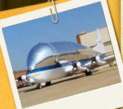

<%@LANGUAGE="JAVASCRIPT" CODEPAGE="65001"%>
<!DOCTYPE html PUBLIC "-//W3C//DTD XHTML 1.0 Transitional//EN" "http://www.w3.org/TR/xhtml1/DTD/xhtml1-transitional.dtd">
<html xmlns="http://www.w3.org/1999/xhtml"><!-- InstanceBegin template="/Templates/besaLesMenu.dwt" codeOutsideHTMLIsLocked="false" -->
<head>
<meta http-equiv="Content-Type" content="text/html; charset=utf-8" />
<!-- InstanceBeginEditable name="doctitle" -->
<title>BESA WBT</title>
<!-- InstanceEndEditable -->
<link rel="stylesheet" type="text/css" href="../besamenu.css" title = "besaCSSmenu">

<script language="JavaScript" type="text/JavaScript" src="../scripts/APIWrapper.js"></script>
<script language="JavaScript" type="text/JavaScript" src="../scripts/SCOFunctions.js"></script>
<script language="JavaScript" type="text/javascript" src="../scripts/jquery.js" ></script>
<script language="JavaScript" type="text/JavaScript" src="../scripts/access.js"></script>
<script language="JavaScript" type="text/JavaScript" src="../scripts/besa.js"></script>
<script language="javascript">
	
function popConfirm(){
	if (confirm("Do you wish to exit this unit?")==true) exitCourse(true);
}
</script>

<!-- InstanceBeginEditable name="head" -->

<script language="JavaScript" type="text/javascript">
<!--
if (typeof(blnTut) == "undefined")  {
	initializePage();
}
function updateMenu() {
	if (verNumber != 2) { // LMS version
		closing = false;
		var lfinish = true
		for (i=0; i< arrMLessons[3]-1; i++) { 
			if (arrLessonStatus[3][i] < 1)  {MM_showHideLayers('sta'+(i+1),'','hide');lfinish = false}
			else if (arrLessonStatus[3][i] >= 2) MM_swapImage('imgCompleted'+(i+1),'','../sysimages/lessmenu_complete.png',1)
		}
		if (lfinish==false) document.getElementById("pctitle").style.visibility = "hidden"
		if (arrLessonStatus[3][arrMLessons[3]]) MM_showHideLayers('sta'+arrMLessons[3],'','show')
	}
	//closing = false;
//	var name;
//	//var nCompleted = 0;
//	if (verNumber != 2) { // LMS version
//		//display completion status
//		for (i=0; i<arrMLessons[3]; i++) {
//			var g = eval("document.getElementById('imgCompleted"+(i+1)+"').src");
//			name = "imgCompleted" + (i+1);
//			var gfilename = getgname(g);
//			var gpath = getgpath(g)
//			if (arrLessonStatus[3][i] >= 2) {
//				gfilename = gfilename.replace('_0','_2')
//			} else if (arrLessonStatus[3][i] == 1) {
//				gfilename = gfilename.replace('_0','_1')
//			}
//			document.getElementById(name).src = gpath+gfilename;
//		}
//	}
}
	nLessons = 8;
	arrTitles = new Array(nLessons+1);
	arrText = new Array(nLessons+1);
	
//Unit title and description	
	arrTitles[0] = "Unit 4: Sampling";
	arrText[0] = "For this unit, you will be stationed at Jenks AFB in Oklahoma City.  As you participate in various sampling situations around the base, you’ll be learning how sampling and the development of a sampling strategy relate to the HRA process and OEHSA.  You’ll learn to develop a sampling strategy, collect and perform field analysis on soil and solid samples, and interpret sampling results.";

//Lesson 1 title and description	
	arrTitles[1] = "Overview of Sampling Strategy Development";
	arrText[1] = "Before performing your sampling duties at Jenks AFB, you need to understand how to develop a sampling strategy.  Upon completion of this lesson, you will be able to describe how sampling and the development of a sampling strategy relate to the HRA process and OEHSA.";
	
//Lesson 2 title and description	
	arrTitles[2] = "Air Sampling";
	arrText[2] = "Jenks AFB provides depot maintenance on the Air Force's most sophisticated weapons systems and other special aircraft when needed.  In this lesson, you will evaluate workers’ exposure to paint they are using on a one-of-a-kind aircraft, NASA's 377SGT-F &ldquo;Super Guppy.&ldquo; Upon completion of this lesson, you will be able to explain the procedures for developing an air sampling strategy."

//Lesson 3 title and description	
	arrTitles[3] = "Soil and Solid Sampling";
	arrText[3] = "In this lesson, you will learn the procedures for developing a soil and solid sampling strategy.  You will also learn about collecting and analyzing soil and solid samples through an investigation of soil contamination on the bases golf course. Upon completion of this lesson, you will be able to: Outline the procedures for developing a soil and solid sampling strategy; Collect soil and solid samples; Perform field analysis on soil<br />and solid samples."
	
//Lesson 4 title and description	
	arrTitles[4] = "Liquid and Water Sampling";
	arrText[4] = "In this lesson, you will learn the factors you must consider when developing a water sampling strategy, and you will assist in developing a sampling strategy for investigating potential contamination of the base’s groundwater, which is the source of drinking water for the base. Upon completion of this lesson, you will be able to outline the procedures for developing a liquid and water sampling strategy."

//Lesson 5 title and description	
	arrTitles[5] = "Interpreting Sampling Results";
	arrText[5] = "In this lesson, you will interpret results of sampling you conducted previously in this unit.  This lesson provides refresher information about total exposure health risk and the relationship of results to standards, mission, and effects.<br /><br />Upon completion of this lesson, you will be able to explain how sampling results are interpreted."
	
//Prograss check description	
	arrTitles[6] = "Progress Check";
	arrText[6] = "This Progress Check will assist you with reviewing information about sampling. If you are taking this course for upgrade training, you are required to successfully complete each Progress Check to qualify for the final exam and enrollment in BESA II."

//Recources description
	arrTitles[7] = "Resources";
	arrText[7] = "This page provides a list of helpful resources related to this unit."
		
	function showOverview(iLes) {
		MM_setTextOfLayer('oTitle', '', arrTitles[iLes]);
		MM_setTextOfLayer('text', '', arrText[iLes]);
		MM_showHideLayers('overText', '', 'show');
	}
	
	function toLesson(les) {
		var startTles =  new Date().getTime();
		setCookie("startTles", startTles);
		window.location = "lesson"+les+"/"+les+"smp010.html"
	}
	
function MM_swapImgRestore() { //v3.0
  var i,x,a=document.MM_sr; for(i=0;a&&i<a.length&&(x=a[i])&&x.oSrc;i++) x.src=x.oSrc;
}
function MM_preloadImages() { //v3.0
  var d=document; if(d.images){ if(!d.MM_p) d.MM_p=new Array();
    var i,j=d.MM_p.length,a=MM_preloadImages.arguments; for(i=0; i<a.length; i++)
    if (a[i].indexOf("#")!=0){ d.MM_p[j]=new Image; d.MM_p[j++].src=a[i];}}
}

function MM_findObj(n, d) { //v4.01
  var p,i,x;  if(!d) d=document; if((p=n.indexOf("?"))>0&&parent.frames.length) {
    d=parent.frames[n.substring(p+1)].document; n=n.substring(0,p);}
  if(!(x=d[n])&&d.all) x=d.all[n]; for (i=0;!x&&i<d.forms.length;i++) x=d.forms[i][n];
  for(i=0;!x&&d.layers&&i<d.layers.length;i++) x=MM_findObj(n,d.layers[i].document);
  if(!x && d.getElementById) x=d.getElementById(n); return x;
}

function MM_swapImage() { //v3.0
  var i,j=0,x,a=MM_swapImage.arguments; document.MM_sr=new Array; for(i=0;i<(a.length-2);i+=3)
   if ((x=MM_findObj(a[i]))!=null){document.MM_sr[j++]=x; if(!x.oSrc) x.oSrc=x.src; x.src=a[i+2];}
}
//-->
</script>
<!-- InstanceEndEditable -->
</head>

<body onload="showOverview(0);MM_preloadImages('../sysimages/printunit_2.jpg')">
<!-- InstanceBeginEditable name="others" -->

<div id="overText" >
<p id="oTitle"></p>
<p id="text"></p>
</div>

<div id="lyprint">
<a href="04_Print_Version.pdf" target="_blank" onmouseout="MM_swapImgRestore()" onmouseover="MM_swapImage('img_printer','','../sysimages/printunit_2.jpg',1)"></a></div>

<div id="menuPic"></div>

<div id="location" >Oklahoma City, OK, USA</div>

<div id="lesTitles">
<table border="0" cellspacing="0">
    <tr>
      <th ><a href="javascript:toLesson(1)" onmouseover="showOverview(1)" onmouseout="showOverview(0)"><p class="ltitle">Lesson 1: &nbsp;Overview of Sampling<br />Strategy Development</p></a></th>
    </tr>
    
    <tr>
      <th ><a href="javascript:toLesson(2)" onmouseover="showOverview(2)" onmouseout="showOverview(0)">Lesson 2: &nbsp;Air Sampling</a></th>
    </tr>
    
    <tr>
      <th><a href="javascript:toLesson(3)" onmouseover="showOverview(3)" onmouseout="showOverview(0)">Lesson 3: &nbsp;Soil  and Solid Sampling</a></th>
    </tr>
    
    <tr>
      <th><a href="javascript:toLesson(4)" onmouseover="showOverview(4)" onmouseout="showOverview(0)">Lesson 4: &nbsp;Liquid and Water Sampling</a></th>
    </tr>
    
    <tr>
      <th><a href="javascript:toLesson(5)" onmouseover="showOverview(5)" onmouseout="showOverview(0)">Lesson 5: &nbsp;Interpreting  Sampling Results</a></th>
    </tr>
    
    <tr>
      <td><a class="lesTitle" href="javascript:goURL('resources.html')" onmouseover="showOverview(7)" onmouseout="showOverview(0)">Resources</a></td>
  </tr>
</table>
</div>
<div id="pctitle" style="position:absolute; left:437px; top:424px; width:321px; height: 20px;"><a href='javascript:toLesson(6)' onmouseover='showOverview(6)' onmouseout='showOverview(0)'>Progress Check</a></div>

<div id="sta1" style="position:absolute; left:757px; top:187px" ></div>
<div id="sta2" style="position:absolute; left:757px; top:238px"></div>
<div id="sta3" style="position:absolute; left:757px; top:273px"></div>
<div id="sta4" style="position:absolute; left:757px; top:307px"></div>
<div id="sta5" style="position:absolute; left:757px; top:343px"></div>
<div id="sta6" style="position:absolute; left:759px; top:417px; visibility: hidden;"></div>

<!-- InstanceEndEditable -->
<div id="lynav">
      <ul id="navigation">

        <li class="exit"><a href="javascript:popConfirm()" title="Exit Course"></a></li>
    </ul>
</div>

<script type="text/javascript">updateMenu()</script>
</body>
<!-- InstanceEnd --></html>
